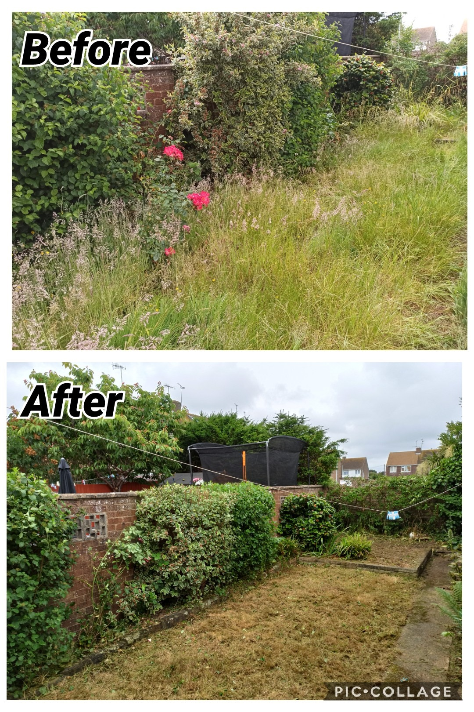

In science, chaos is characterized by sameness and order is characterized by difference and complexity.

Chaos and order
An analogy can be made with the gardens. If we don’t take care of our gardens, they will become chaotic and overgrown. It could be reestructured and organized, but it will take a lot of time and effort. If by originally we take care of our gardens, they will be orderly and beautiful. It will take less time and effort to maintain them.
Encapsulation and abstraction
Encapsulation is interwoven with two ideas: simplifying behavior and hiding data. In this context, we are referring to the first idea. We need to rememeber that at the moment of coding this means to give tasks to a well-defined object or function.
We have three differnt levels of abstraction in the following example:
https://duckduckgo.com/Sausage - Sausage A type of meat product usually made from ground meat-often pork, beef, or poultry—along with...
https://duckduckgo.com/Sausage_(band) - Sausage (band) A short-lived alternative/funk rock band featuring a reunion of the 1988 lineup of the San...
https://duckduckgo.com/Sausage_Software - Sausage Software An Australian software company, founded by entrepreneur Steve Outtrim, which produced one of the...
https://duckduckgo.com/dachshund - Sausage dog A German breed of short-legged, long-bodied dog of hound type.
https://duckduckgo.com/Sausage_Galaxy - Sausage Galaxy A former dwarf galaxy that accreted in a violent collision into the Milky Way.
https://duckduckgo.com/The_Sausages_of_Babel - "The Sausages of Babel " A Dutch TV-presenting trio.
https://duckduckgo.com/Baboon_(band) - Sausage (album) An American rock band originally from Denton, Texas. The band formed in 1991.
Requests
import requestsparams =dict(q='Sausages', format='json')parsed = requests.get('http://api.duckduckgo.com/', params=params).json()results = parsed['RelatedTopics']for r in results:if'Text'in r:print(r['FirstURL'] +' - '+ r['Text'])
DuckDuckGo module
import duckduckgofor r in duckduckgo.query('Sausages').results:print(r.url +' - '+ r.text)
All three examples do the same thing, but the first one is more less-readable and requires more knowledge about how to use the API.
Layering
In software engineering we should care the interactions between objects and functions. Avoid dependecies between them. We can achieve this by layering our code. The idea is to have a layer of objects and functions that are independent of each other, and then have rules for how the layers can interact with each other. This way, we can change one layer without affecting the others.
The Dependency Inversion Principle
The Dependency Inversion Principle states that high-level modules should not depend on low-level modules. Both should depend on abstractions. Additionally, abstractions should not depend on details. Details should depend on abstractions.
High-level modules are those that contain complex logic and are responsible for the overall behavior of the system (in other words, they are the important ones in ultimate instance and refere to the real-world concepts). Low-level modules are those that contain simple logic and are responsible for specific tasks.
Note:
SOLID is an acronym for five principles of object-oriented programming and design. The Dependency Inversion Principle is one of them. (See the SOLID appendix for more information.)